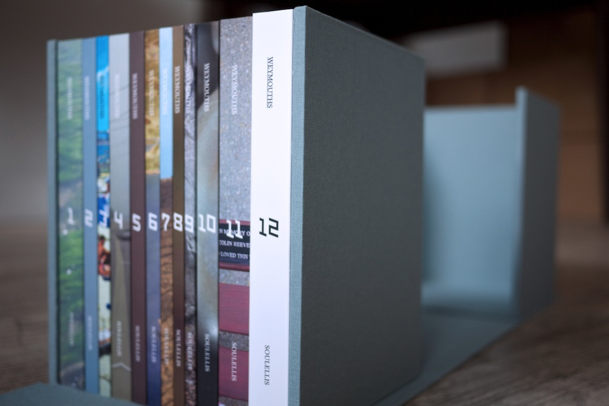
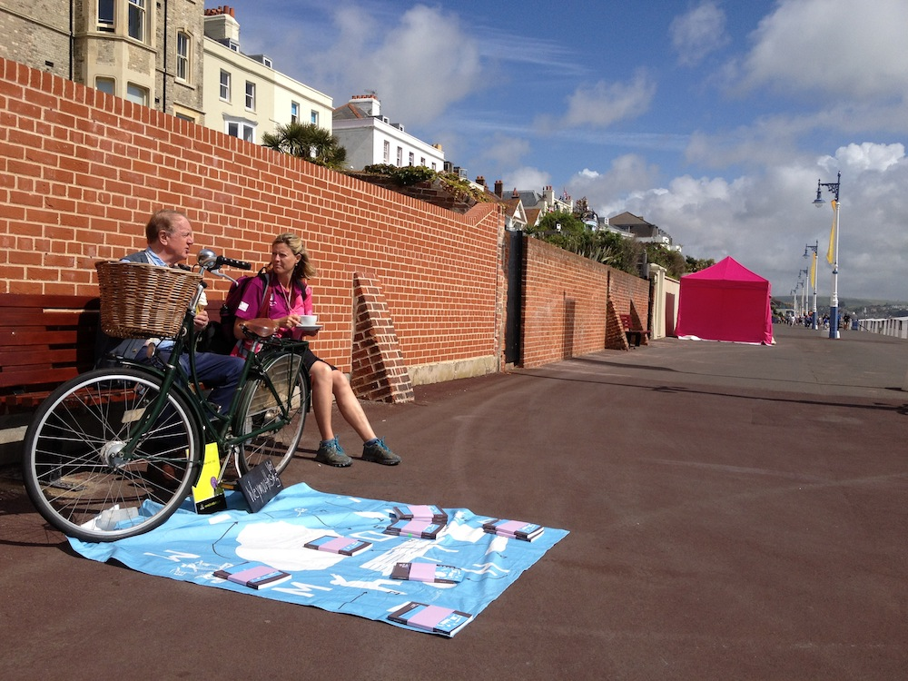
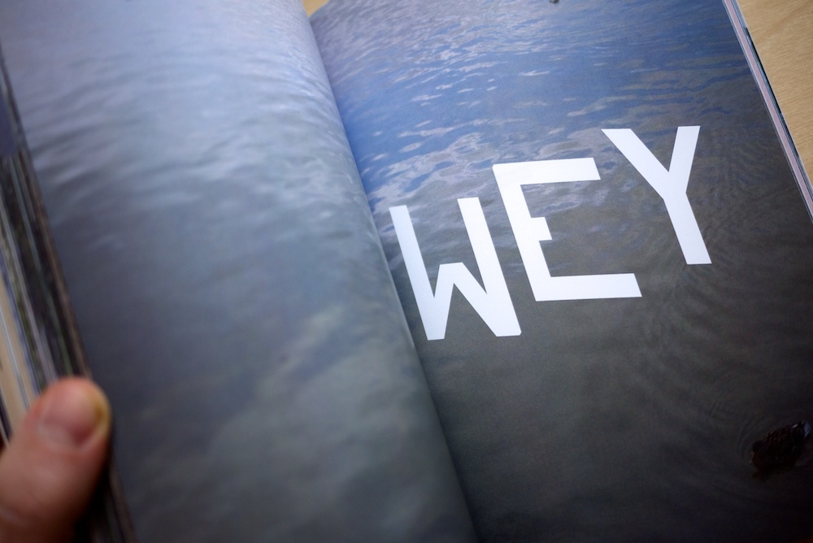
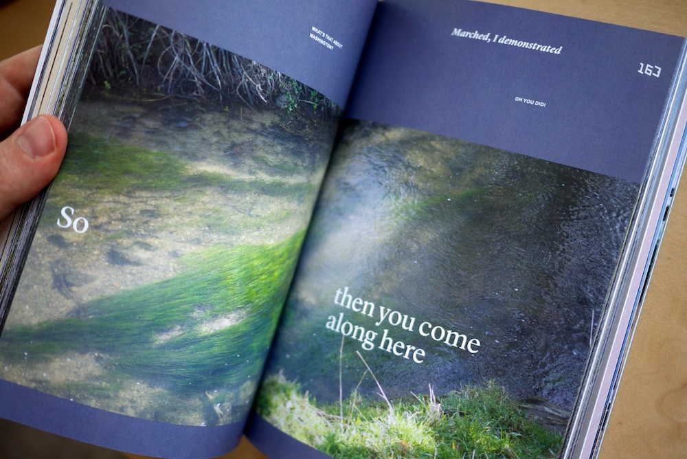
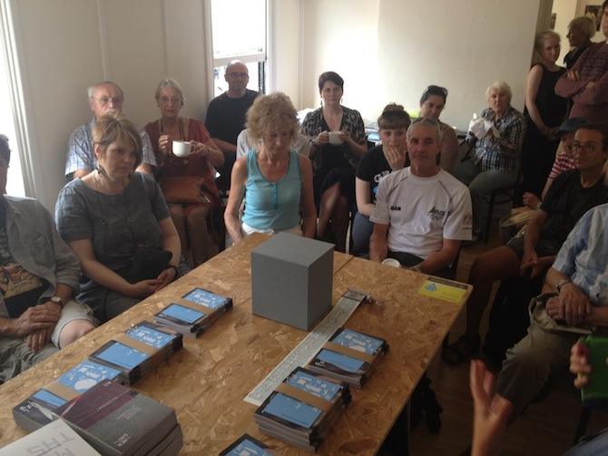
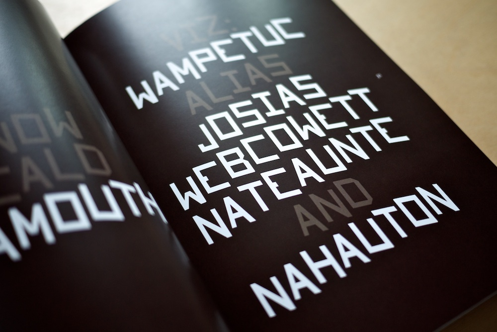
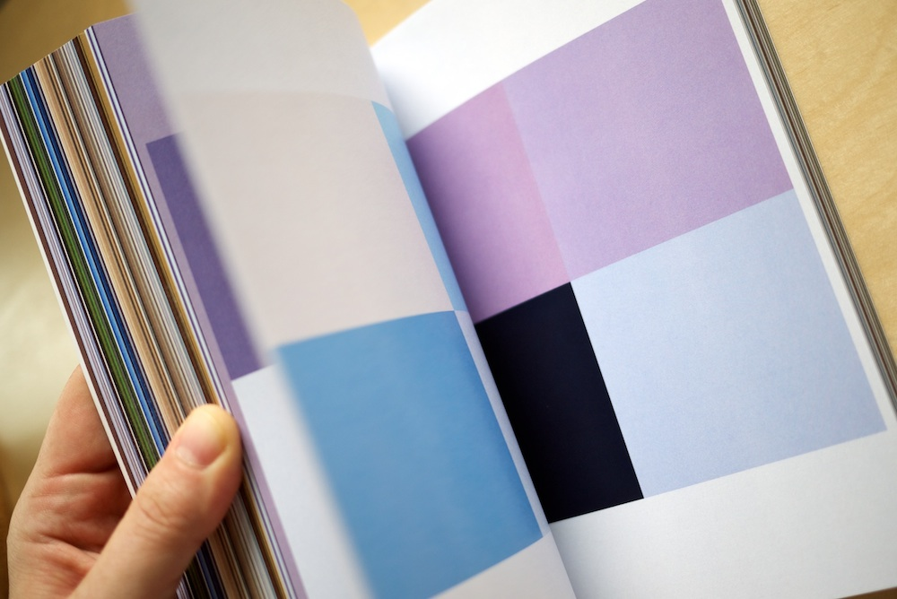
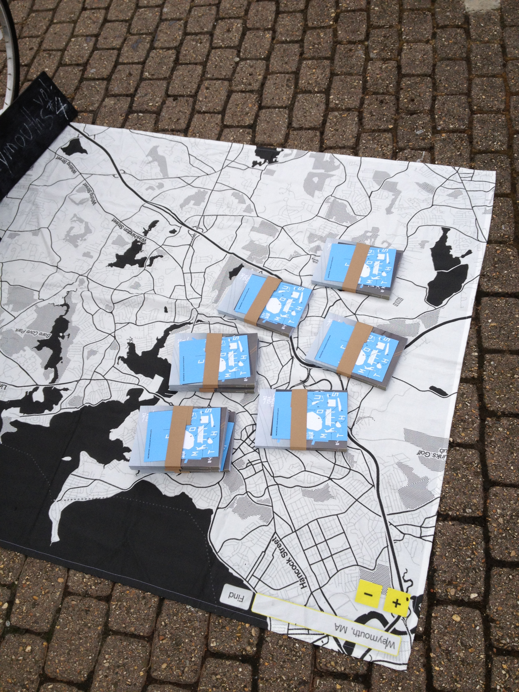
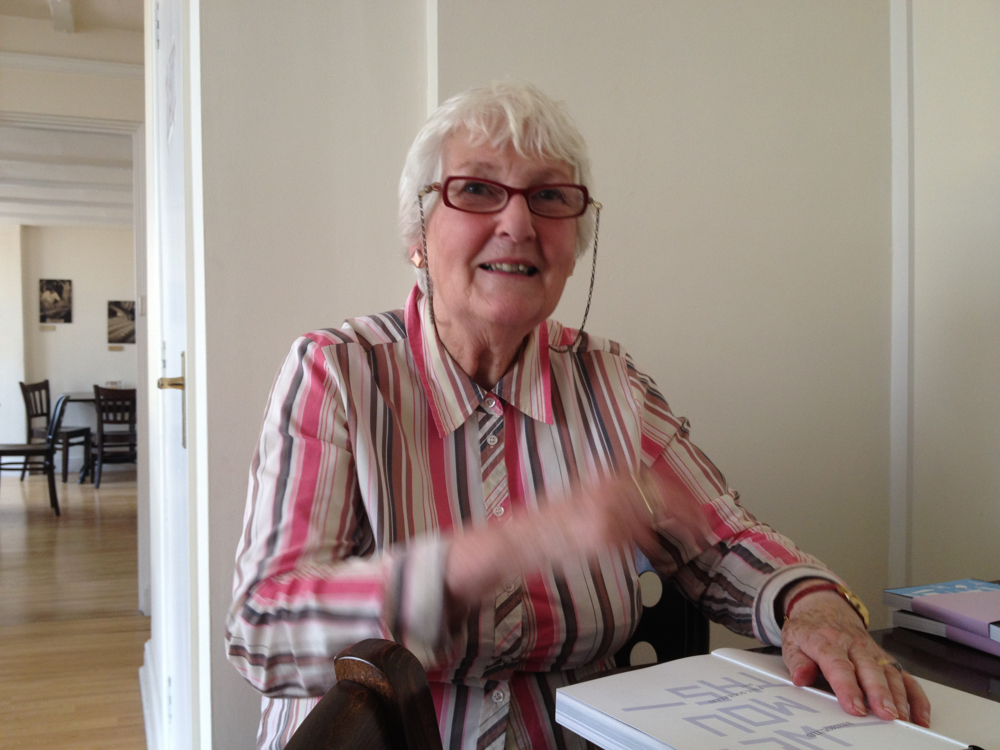

Weymouths (2012)

Weymouths is a 12-part book work investigating place, identity and memory in Weymouth, Dorset (UK) and Weymouth, Massachusetts (USA). The project was conceived as an archive and installed and performed as a series of public book encounters during the London 2012 Cultural Olympiad in Weymouth, England (site of the Olympic sailing competition). Weymouths was a commission for the b-side Multimedia Arts Festival and funded by Arts Council England.
Weymouths positions the artist’s book outside of commercial publishing.

Each morning, 20 books were given away to passers-by at various locations around town—one volume per day. 240 books were given away during 12 days. All of the books were free, but several people gave objects, books, notes, stories, and art in return. Each afternoon, the entire set was open to the public in a reading room installation above a bakery at the center of town.

As an archive, Weymouths is an open reliquary of first-hand accounts, third-person memory and collective identity. The books are bound containers holding public domain texts, historical records, lists, archival imagery, photography, tweets, interviews, maps, color, Google Street View, Wikipedia and other raw source material that were assembled into real and imagined narratives.

As a performance, Weymouths enabled the creation of a spontaneous community through the simple act of giving away books. Each public book encounter between artist and audience became an excuse for conversation, as new stories expanded the work in real-time.

As a social networking experiment, Weymouths enabled the formation of new connections, bonds and relationships between artist and audience.

A 20-minute talk about the project for the Book Live symposium on June 8–9, 2012 at London South Bank University, posted as a single Tumblr blog.



